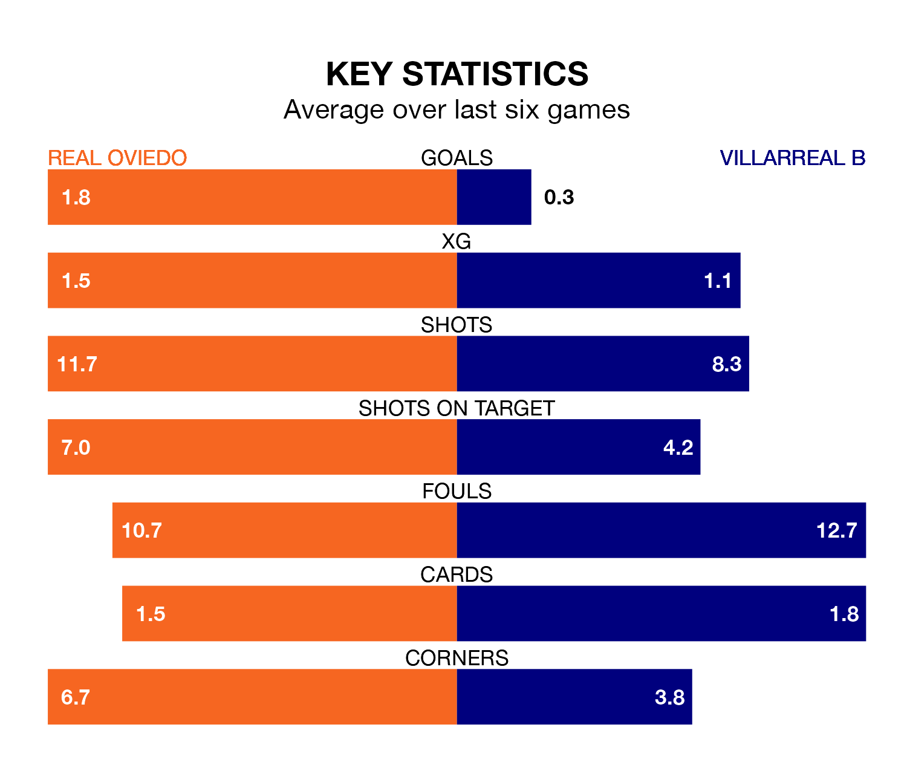

Real Oviedo are heavy favourites to keep all three points at home in Sunday's late kick-off against Villarreal B.
Oviedo, who sit ninth in the Segunda División with 32 games played, are priced at 1.6 to seal victory at the Estadio Nuevo Carlos Tartiere.
Sitting 12 places and 18 points behind them in the table, Villarreal B are 5.5 to win with *Betting Company*, while the draw is at 3.9.
Oviedo are in mixed form in the Segunda División, with three wins and a draw from their last six games.
With no wins and two draws over that period, Villarreal B's form is much worse – they have taken two points from 18, compared to the home side's 10.
With 29 goals in 32 games so far this season, the visitors are scoring at below the league average rate with 0.9 goals per game. And they are conceding more than average, letting in 48 goals at a rate of 1.5 per game.
Oviedo, meanwhile, are above average scorers, with 1.2 goals per game, compared to a league average of 1.1. They have conceded 0.9 goals per game.
In Álex Forés Mendoza, Villarreal B have one of the league's sharpest shooters so far this season. He has notched 12 goals in 32 appearances, to sit fourth in the scoring charts.
Oviedo's top scorers, with eight goals in 32 games each, are Borja Bastón and Francisco Sebastián Moyano Jiménez.
In the last three years, Oviedo and Villarreal B have played each other on three occasions. Villarreal B won two of them and they drew once.
Their last meeting was on December 21, when they played out a 1-1 draw.
Oviedo's last match was on March 23, a 1-0 loss against AD Alcorcón.
Villarreal B lost 2-1 against Leganés last time out, also on March 23, with Forés Mendoza on the scoresheet.
Updated: 12:39 (UTC), 26/03/24